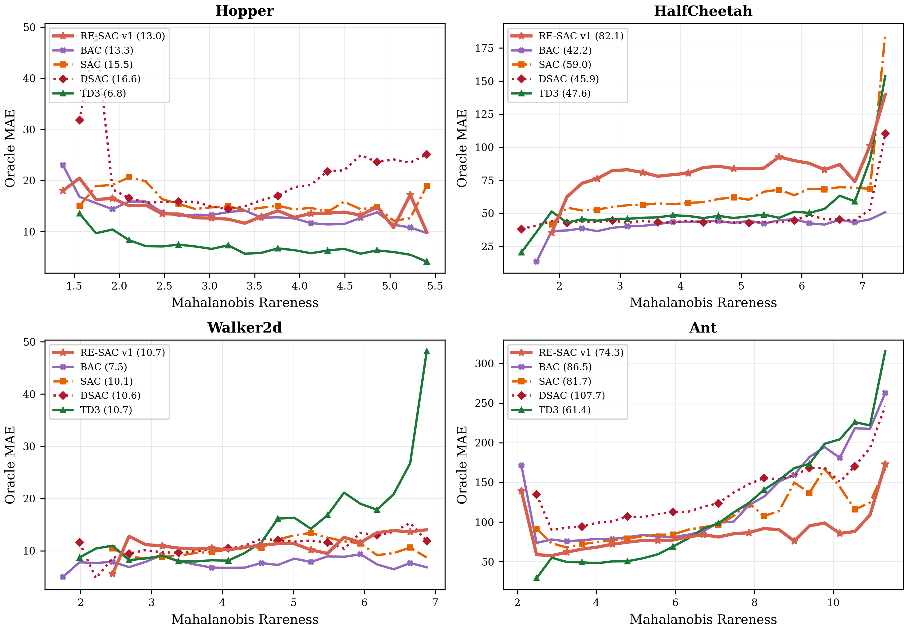
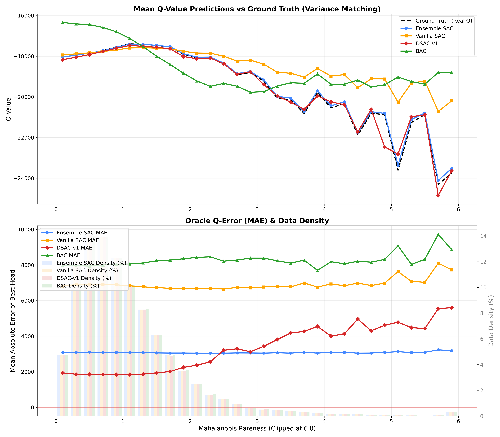

Contraction of the multi-penalty Bellman operator, plus a counterexample to contraction, are machine-verified in Lean 4/Mathlib for finite spaces, provided as supplementary files.
Abstract
Bus holding control is challenging due to stochastic traffic and passenger demand. While deep reinforcement learning (DRL) shows promise, standard actor-critic algorithms suffer from Q-value instability in volatile environments. A key source of this instability is the conflation of two distinct uncertainties: aleatoric uncertainty (irreducible noise) and epistemic uncertainty (data insufficiency). Treating these as a single risk leads to value underestimation in noisy states, causing catastrophic policy collapse. We propose a robust ensemble soft actor-critic (RE-SAC) framework to explicitly disentangle these uncertainties. RE-SAC applies Integral Probability Metric (IPM)-based weight regularization to the critic network to hedge against aleatoric risk, providing a smooth analytical lower bound for the robust Bellman operator without expensive inner-loop perturbations. To address epistemic risk, a diversified Q-ensemble penalizes overconfident value estimates in sparsely covered regions. This dual mechanism prevents the ensemble variance from misidentifying noise as a data gap, a failure mode identified in our ablation study. Experiments in a realistic bidirectional bus corridor simulation demonstrate that RE-SAC achieves the highest cumulative reward (approx. -0.4e6) compared to vanilla SAC (-0.55e6). Mahalanobis rareness analysis confirms that RE-SAC reduces Oracle Q-value estimation error by up to 62% in rare out-of-distribution states (MAE of 1647 vs. 4343), demonstrating superior robustness under high traffic variability.
Problem
Actor-critic DRL for bus holding control suffers Q-value instability because aleatoric noise and epistemic data gaps are conflated into a single risk. This causes value underestimation and policy collapse in stochastic transit environments.
Approach
RE-SAC combines IPM-based ℓ1 weight regularization of the critic, which gives a Lipschitz lower bound against aleatoric risk, with a diversified Q-ensemble whose variance penalizes epistemic uncertainty. The theory shows that frozen target parameters are sufficient for γ-contraction of the multi-penalty Bellman operator, and it gives a counterexample when the penalties depend on Q. Both results are mechanized in Lean 4/Mathlib for the finite-space case. Evaluation covers Brax MuJoCo tasks and a bidirectional bus corridor simulation.
Results
On MuJoCo, RE-SAC has the lowest oracle Q-error on 3 of 4 environments, with MAE up to 55% lower than DSAC on Ant. In the bus simulation it reaches about -0.4e6 cumulative reward versus -0.55e6 for SAC, and reduces Q-error in rare out-of-distribution states by up to 62%.

Figure 1: Oracle Q-Error (MAE) binned by Mahalanobis rareness on four MuJoCo environments. Legend entries show overall Oracle MAE. RE-SAC v1 (coral \star ) maintains the lowest oracle Q-estimation error across rareness bins on three of four environments, with BAC (purple \times ) the closest competitor on Ant. The figure focuses on the five algorithms used in the paper’s main table; older RE-SAC v

Figure 5: Oracle Q-Error (MAE) banded by Mahalanobis Rareness. RE-SAC maintains accurate estimates even in highly rare/OOD states.